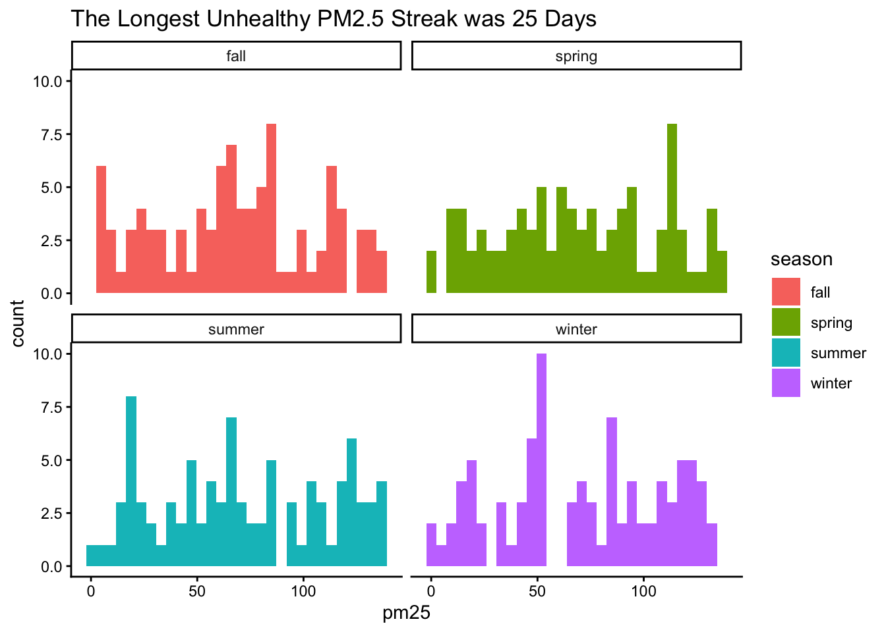
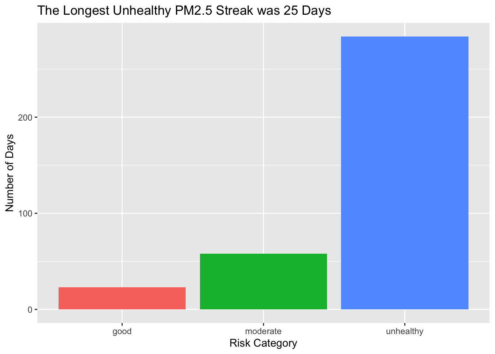

# CLEAR THE ENVIRONMENT
rm(list=ls())
library(ggplot2)Assignment 3
Set Up
Building a Data Set
day— a sequence of integers from 1 to 365pm25— daily PM2.5 concentration (µg/m³), sampled from a distribution of your choice using one of the data generation functions covered in class (runif,rnorm,rpois). Choose parameters that produce realistic values — look up typical urban PM2.5 ranges to guide your choices.season— a factor column with levels"winter","spring","summer","fall", assigned based on day number (days 1–90, 91–180, 181–270, 271–365)risk— an empty column initialized toNA— you will fill this in Part 2
Part 1
# SEQUENCE FROM 1-365
day = seq(from=1, length.out=365)
# SAMPLE DATA FOR PM25
pm25 = runif(min=0, max=137, n=365)
# PUT INTO A DATAFRAME
air_quality_read = data.frame(day=day, pm25=pm25)
# ADD A COLUMN FOR SEASON
air_quality_read$season = ifelse (day %in% 1:90, "winter",
ifelse(day %in% 91:180, "spring",
ifelse(day %in% 181:270, "summer"
, "fall")))
# ADD AN EMPTY COLUMN FOR RISK
air_quality_read$risk=NAPart 2
Using a for loop, fill in the risk column for each day based on the following PM2.5 thresholds (adapted from EPA AQI guidelines):
"good"— PM2.5 below 12 µg/m³"moderate"— PM2.5 between 12 and 35.4 µg/m³"unhealthy"— PM2.5 above 35.4 µg/m³
Important while there are many ways to do this - you must use a for loop
Within the same loop, also track the longest consecutive streak of "unhealthy" days. This will require checking the previous row’s risk classification at each step. Store the final streak length in a variable called max_unhealthy_streak
# initialize
current_streak = 0
max_unhealthy_streak = 0
# for each day
for (n in 1:365) {
# classify risk for the current day
if (pm25[n] < 12) {
#if the air quality is less than 12, classify as good
air_quality_read$risk[n] = "good"
# if it's not less than twelve check if it's less than or = to 35.4
} else if (pm25[n] <= 35.4) {
# if it is, it's moderate
air_quality_read$risk[n] = "moderate"
#if it's not, it's unhealthy
} else {
air_quality_read$risk[n] = "unhealthy"
}
# TRACK UNHEALTHY STREAKS
# if the air quality risk is unhealthy
if (air_quality_read$risk[n] == "unhealthy") {
# add it to the current streak - add one to current streak (which starts as 0)
current_streak = current_streak + 1
# if the current streak is greater than the max unhealthy streak, then make it equal to the current streak
if (current_streak > max_unhealthy_streak) {
max_unhealthy_streak = current_streak
}
# if not, the current streak is set at 0
} else {
current_streak = 0
}
}Part 3
Write a for loop that computes number of days in each season that fall into unhealthy risk category
# first have the loop go through each season with each day
winter_unhealthy = 0
spring_unhealthy = 0
summer_unhealthy = 0
fall_unhealthy = 0
for (n in 1:365) {
if (air_quality_read$season[n] == "winter") {
if (air_quality_read$risk[n] == "unhealthy") {
winter_unhealthy = winter_unhealthy + 1
}
}
if (air_quality_read$season[n] == "spring") {
if (air_quality_read$risk[n] == "unhealthy") {
spring_unhealthy = spring_unhealthy + 1
}
}
if (air_quality_read$season[n] == "summer") {
if (air_quality_read$risk[n] == "unhealthy") {
summer_unhealthy = summer_unhealthy + 1
}
}
if (air_quality_read$season[n] == "fall") {
if (air_quality_read$risk[n] == "unhealthy") {
fall_unhealthy = fall_unhealthy + 1
}
}
}
winter_unhealthy[1] 71spring_unhealthy[1] 71summer_unhealthy[1] 70fall_unhealthy[1] 72Part 4
Produce at least two plots:
A time series or histogram showing PM2.5 concentration across the year, colored or faceted by season
A bar chart showing the count of days in each risk category,
Each plot must have a title generated using sprintf that includes the the max_unhealthy_streak value you calculated in Part 2.
Histogram
plottitle=sprintf("The Longest Unhealthy PM2.5 Streak was %d Days", max_unhealthy_streak)
ggplot(air_quality_read, aes(x = pm25, fill = season)) +
geom_histogram(bins = 30) +
facet_wrap(~season) +
labs(title = plottitle)+
theme_classic()
Bar Chart
# make a df for just the streaks
plottitle=sprintf("The Longest Unhealthy PM2.5 Streak was %d Days", max_unhealthy_streak)
risk_counts= table(air_quality_read$risk)
risk_counts_df = as.data.frame(risk_counts)
risk_counts_df Var1 Freq
1 good 23
2 moderate 58
3 unhealthy 284ggplot(risk_counts_df, aes(x = Var1, y = Freq, fill = Var1)) +
geom_bar(stat = "identity") +
labs(title = plottitle,
x = "Risk Category",
y = "Number of Days") +
theme(legend.position = "none")
Management Summary
A measure of PM 2.5 levels show concerns for air pollution, particularly during the fall months. These findings also indicate that particulate matter concentrations are at unhealthy levels during most of the year, with 279 days within the year having unhealthy levels of PM 2.5, and the fewest days of the year being those with good levels of PM 2.5 at 27 days. These concentrations present health concerns to those in at-risk groups, and shows possible concerns with wildfire smoke and emissions that are likely to cause these high concentrations. In terms of mitigation, I recommend the use of filters inside homes and businesses, and to limit time outdoors for outdoor workers, especially during fall.